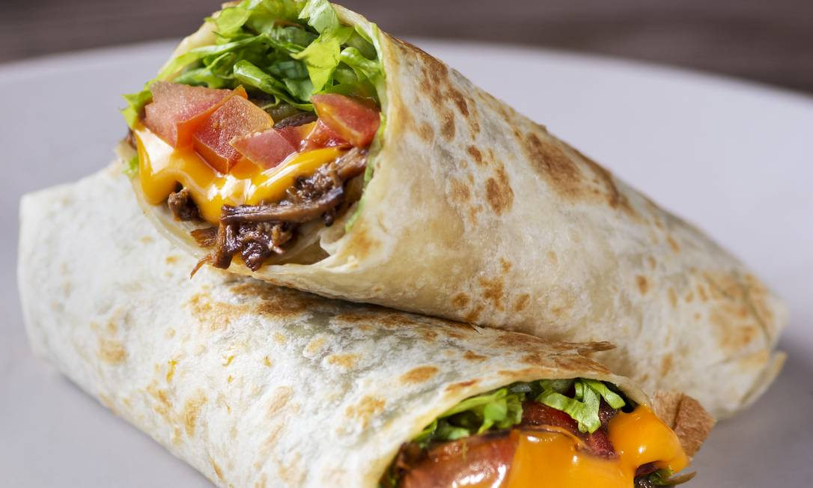
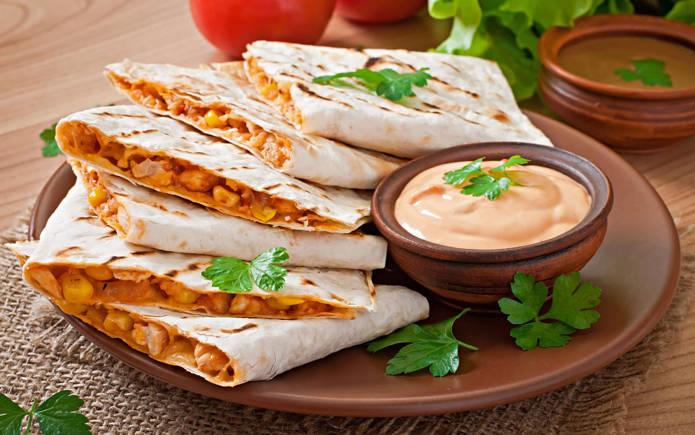
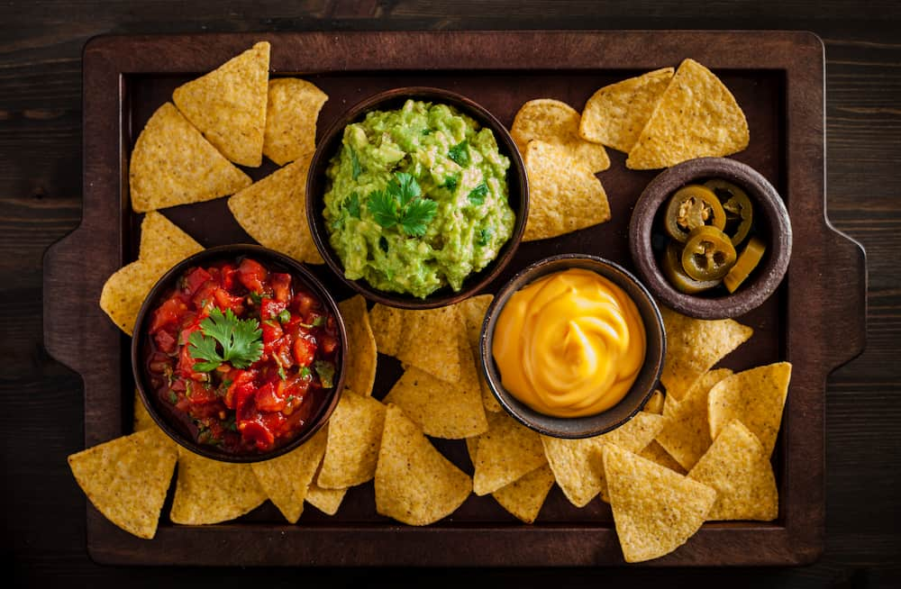
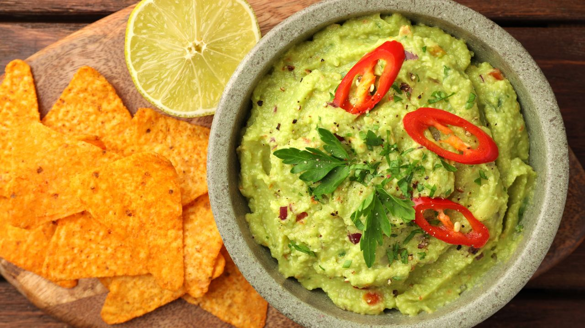
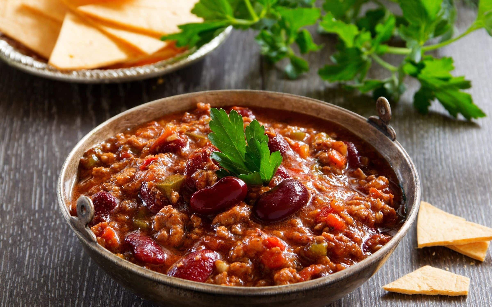

Nossos Pratos
Tacos
Taco é uma comida típica do México, popular também nos
Estados Unidos, feita com massa fina de milho frita chamada
de tortilla, que é moldada no formato de uma concha para
receber um recheio. Acredita-se que tenha sido inventado
pelo imperador asteca Monteczuma. O milho é a base da
culinária mexicana desde antes da colonização espanhola. Os
restaurantes de fast-food do México servem o taco mexicano
(receita original). Este também transformou-se em um prato
popular nos Estados Unidos, devido a proximidade territorial
e o influxo do século XXI de imigrantes mexicanos. Contudo,
há diferenças entre as receitas dos países. O taco
estadunidense, por exemplo, é frito em imersão, de modo que
a massa fique moldada para receber o recheio, que é chamado
de hard-shell (em português: "concha dura").

Burrito
Burrito é um prato tradicional da culinária mexicana e da
culinária Tex-Mex consistindo em uma tortilla de farinha
geralmente recheada de diversos ingredientes, a maior parte
das variantes utiliza feijão e carnes (bovina, suína ou
frango) com acompanhamentos. Burritos percherones costumam
ser maiores e os recheios incluem ingredientes como arroz,
feijão, alface, tomates, salsa, guacamole, queijo, creme e
vegetais, o que se distingue da variante mexicana do prato
geralmente preenchida com carne e feijão.

Quesadilha
A quesadilha é uma tortilha, usualmente uma tortilha de
milho - mas às vezes é feita com uma tortilha de trigo, que
é recheada com queijo e depois é grelhada. Outros itens
consistem em uma saborosa mistura de temperos ou vegetais,
que são adicionados enquanto se está cozinhando ou
grelhando. Uma quesadilha completa envolve duas tortilhas
preenchidas com queijo e empilhado em cima uns dos outros.
Metades são uma única tortilha recheada com queijo e
dobradas em forma de meia-lua.

Nachos
Nachos são uma comida popular nos Estados Unidos e no
México. O prato consiste de tortilhas de milho crocantes com
formato triangular, cobertas por queijo e pimenta jalapeño.
O prato foi inventado por Ignacio "Nacho" Anaya, em 1943.

Molhos
-
Guacamole
O guacamole é uma iguaria típica da culinária do
México, servida com uma grande variedade de
pratos e geralmente acompanhada com
pico-de-gallo e nata azeda. É basicamente um
puré de abacate bem temperado, que funciona como
um complemento da salada, tendo sido exportado
para todas as partes do mundo onde existe comida
mexicana, mesmo que esta seja alterada de acordo
com os gostos locais. O nome "guacamole" tem
origens indígenas no náuatle: onde "Ahuacatl"
(abacate) e "mole", um nome genérico para
"molho". Segundo a tradição pré-hispânica, a
forma de se fazer guacamole foi ensinada ao povo
Tolteca pelo deus Quetzalcóatl. Esta iguaria foi
criada pela cultura asteca, mas, após a chegada
dos colonizadores espanhóis, foi exportada para
a Europa. Diz-se que o guacamole foi servido a
primeira vez no Brasil por volta do ano de 1684,
pela cozinheira Eduarda Neves, e a partir dessa
data começou a ser inserido também na cultura
brasileira que é super miscigenada.

-
Pico de Gallo
O pico-de-gallo é um ingrediente típico da
culinária mexicana, servido com uma grande
variedade de pratos, muitas vezes acompanhado
com guacamole e nata azeda. É basicamente uma
salada feita com pedacinhos de tomate, misturada
com cebola, cebolinho e folhas de coentro
(chamado "cilantro" no México e no sul dos
Estados Unidos) e temperada com sumo de limão e
óleo; muitas vezes, leva também grãos de milho
amarelo, doce ou cozido, o que lhe dá um aspecto
muito atraente — e justifica o nome: "bico de
galo", ou seja, "comida para galinhas"… Por
vezes, também leva malagueta, embora normalmente
este tempero forte esteja no próprio prato
principal ou na salsa, o molho de pimenta
vermelha que nunca falta na mesa dos mexicanos.

-
Sour Cream
Creme azedo, ou sour cream, mais conhecido em
Portugal como natas azedas ou natas ácidas, é um
laticínio rico em gordura obtido da fermentação
de creme de leite normal por determinados tipos
de bactérias lácteas. As bactérias, introduzidas
deliberadamente ou naturalmente, azedam e
engrossam o creme. O sabor do creme azedo, como
o nome diz, é levemente ácido.
-
Chili com Carne
Chili com carne, ou simplesmente chili, que
significa "chili com carne", é um estufado
picante contendo pimenta chili (às vezes na
forma de chili em pó), carne (geralmente carne
bovina), tomates e, muitas vezes, feijão carioca
ou feijão vermelho. Outros temperos podem
incluir alho, cebola e cominho. O prato
originou-se no norte do México ou no sul do
Texas. Os tipos de carne e outros
ingredientes utilizados variam de acordo com os
gostos geográficos e pessoais. As receitas
provocam polêmica entre os aficionados, alguns
dos quais insistem que a palavra chili se aplica
apenas ao prato básico, sem feijão e tomate.
Chili com carne é um prato comum para cozinhar e
pode ser usado como acompanhamento, guarnição ou
ingrediente em outros pratos, como sopas ou
salsas.
